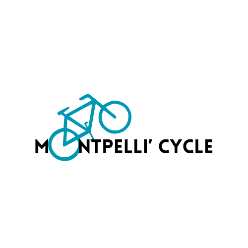

Make this Notebook Trusted to load map: File -> Trust Notebook
Disponibilité des vélos

Vous cherchez un vélo disponible près de chez vous ou à proximité de votre destination ? Grâce à notre carte interactive, vous pouvez visualiser en temps réel la disponibilité des vélos dans toute la ville de Montpellier.
📊 Mise à jour toutes les 15 minutes, cette carte est un outil pratique pour :
- Trouver rapidement une station de vélos avec des vélos disponibles ou des places libres.
- Planifier vos trajets en fonction des ressources de votre quartier.
- Suivre l’évolution des disponibilités.
Cliquez sur la carte ci-dessous pour commencer à trouver la station vélo qui vous convient ! 🚴♀️